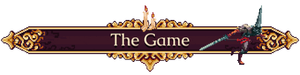

Na gameplay, o jogo mistura combates de ação em tempo real com elementos de exploração em mapas não lineares. Nas lutas, você vai depender muito de reflexos rápidos para desviar de golpes enquanto faz combos de ataques com sua Mea Culpa, uma espada criada a partir da próprio sentimento de culpa do Penitente.
Durante a jornada, o Penitente vai ficando cada vez mais forte conforme encontra Relíquias, Contas de Rosário, Orações e Corações de Espada para debloquear novas habilidade e recursos para a Mea Culpa. Com esses recursos, você pode customizar o personagem para adaptar o arsenal dele de acordo com o seu estilo de jogo.